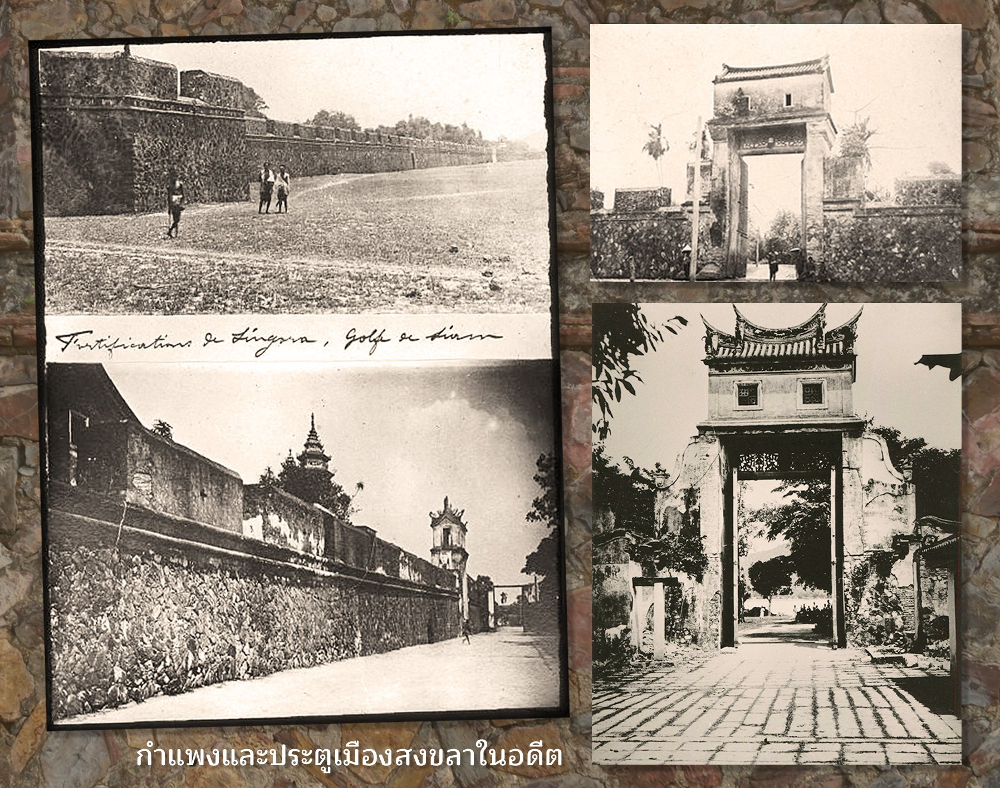

ตั้งอยู่ฝั่งตะวันออกของประเทศไทยมาแต่สมัยโบราณ มีชุมชนโบราณและเมืองเก่าแก่ มีโบราณสถาน โบราณวัตถุ ขนบธรรมเนียมประเพณี และการละเล่นพื้นเมือง ศิลปพื้นบ้านเป็นมรดกทางวัฒนธรรมสงขลา เพิ่งปรากฏเป็นครั้งแรกในบันทึกของพ่อค้าและนักเดินเรือชาวอาหรับ-เปอร์เซีย ระหว่าง ปี พ.ศ.1993-2093 ในนามของเมืองซิงกูร์ หรือซิงกอร่า แต่ในหนังสือประวัติศาสตร์ธรรมชาติและการเมืองแห่งราชอาณาจักร สยามของนายกิโลลาส แซร์แวส เรียกชื่อเมืองสงขลา ว่า "เมืองสิงขร" จึงมีการสันนิษฐานว่า คำว่า สงขลา เพี้ยนมาจากชื่อ "สิงหลา" (อ่าน สิง-หะ-ลา) หรือสิงขรเหตุผลที่สงขลามีชื่อว่า สิงหลา แปลว่าเมืองสิงห์ โดยได้ ชื่อนี้มาจากพ่อค้าชาวเปอร์เซีย อินเดีย แล่นเรือมาค้าขาย ได้เห็นเกาะหนู เกาะแมว เมื่อมองแต่ไกล จะเห็นเป็นรูป สิงห์สองตัวหมอบเฝ้าปากทางเข้าเมืองสงขลา ชาวอินเดีย จึงเรียกเมืองนี้ว่า สิงหลา ส่วนไทยเรียกว่า เมืองสทิง เมื่อมลายูเข้ามาติดต่อค้าขายกับเมืองสทิง ก็เรียกว่า เมืองสิงหลา แต่ออกเสียงเพี้ยนเป็นสำเนียงฝรั่งคือ เป็น ซิงกอร่า (Singora) ไทยเรียกตามเสียงมลายูและฝรั่งเสียง เพี้ยนเป็นสงขลา อีกเหตุผลหนึ่งอ้างว่า สงขลา เพี้ยนมา จาก "สิงขร" แปลว่า ภูเขา โดยอ้างว่าเมืองสงขลาตั้งอยู่ บริเวณเชิงเขาแดง ต่อมาได้มีการพระราชทานนาม เจ้าเมืองสงขลาว่า "วิเชียรคีรี" ซึ่งมีความหมายสอดคล้อง กับลักษณะภูมิประเทศพระบาทสมเด็จพระจุลจอมเกล้าเจ้าอยู่หัว ได้มีพระบรมราชวินิจฉัยไว้ว่า "สงขลา" เดิมชื่อ สิงหนคร (อ่านว่า สิง-หะ-นะ-คะ-ระ) เสียงสระอะอยู่ท้าย มลายูไม่ชอบ จึงเปลี่ยนเป็นอา และชาวมลายูพูดลิ้นรัวเร็ว ตัดหะ และ นะ ออก คงเหลือ สิง-คะ-รา แต่ออกเสียงเป็น ซิงคะรา หรือ สิงโครา จนมีการเรียกเป็น ซิงกอรา
สงขลา เป็นเมืองประวัติศาสตร์ มีเรื่องราวสืบต่อกันตั้งแต่สมัยก่อนประวัติศาสตร์ มีการค้นพบหลักฐาน ได้แก่ ขวานหิน ซึ่งเป็นเครื่องมือสมัยก่อนประวัติศาสตร์ ที่อำเภอสทิงพระ ประวัติ ความเป็นมา และวัฒนธรรมสมัยที่ เมืองสทิงพระเจริญ เค บูรล์เบท ได้ให้ทัศนะว่า สทิงพระ คือศูนย์กลางของอาณาจักรเซี้ยะโท้หรือเซ็กโท เป็นแหล่งหนึ่งในเอเซียตะวันออกเฉียงใต้ ที่ได้รับวัฒนธรรมอินเดียโดยตรงในสมัยอาณาจักรศรีวิชัย เป็นเวลา ไม่น้อยกว่า 7 ศตวรรษ เพราะมีร่องรอยทางสถาปัตยกรรม ประติมากรรม ที่แสดงให้เห็นว่าเมืองสทิงพระเป็น ศูนย์กลางการปกครองดินแดน รอบ ๆ ทะเลสาบสงขลาในสมัยนั้น